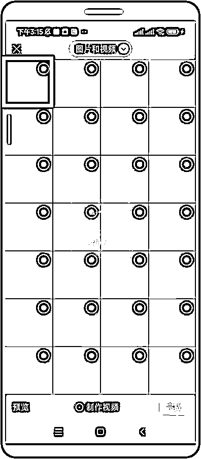

来源：https://ktuszl372b.feishu.cn/docx/KDRLdDJnhocw9Mxj4oycNgcxnnf
这个教程专门针对完全没有任何影刀 RPA 基础的圈友，全程手把手教学，详尽配图，想学不会，真的很难！建议打开影刀，以及准备好需要操作的手机，跟着帖子一步一步来，做一个专属自己的定时发布朋友圈的 RPA 机器人。
Hello，我是 Leeka ，影刀官方认证的中级工程师、UIbot 认证的初级工程师。事不宜迟，打开影刀，马上上车！
注意：影刀手机自动化应用目前只支持安卓手机，iPhone不可用。
前段时间，我在知乎上看见了一道热门问题：做私域的，如何能更高效管理更多用户呢？
除了及时回复用户问题外，我想还有一个很重要的点，那就是：多发朋友圈，持续出现在用户的视线范围内，从而提升用户的触达度。
圈友里有不少私域运营的大佬，我也在星球里搜索了一下发朋友圈这个需求，意识到这个事确实是个痛点，所以就想着让大家用最低成本，自己做一个定时发朋友圈的 RPA 机器人。
最近微信端改革，导致很多朋友圈被折叠，让本来朋友圈触达率就降低的私域，变得更加雪上加霜。
直接复制其他人的朋友圈内容发布，会被系统折叠，不仅这样，同一时间多发几条朋友圈也会被折叠。虽然说防折叠输入法有点用，但治标不治本，由此造成的文字顺序混乱，让客户阅读起来有困难。
可能有小伙伴就要问了：那做一个发朋友圈的机器人就好啦，为什么还要定时？
因为我发现，备受朋友圈折叠困扰的人，都有一个共通点，那就是他们一天内发的朋友圈都不止一条，日常需要时不时想着发圈这件事，到了一定时间就得发一条，这就是为什么发朋友圈机器人需要加上【定时】了。
既然如此，把一个重复的、有逻辑性的需求/痛点，交给 RPA 来解决不就好了吗？
首先第一步，打开影刀。
点击【新建】 - 【手机自动化应用】。
打开后，找到菜单栏上方的【手机管理器】，点击一下，我们先给自己的手机配置一下。
之所以需要给手机配置，是为了方便让影刀操控手机，手机得安装个 “接头人” 才能实现手机自动化操作。
用 USB 线将手机与电脑连接后，点击左上角的【添加】，根据电脑端的提示，选择手机端的 USB 调试设置。
注意：这个步骤一定是要用 USB 数据线连接的，方便影刀给手机安装 APP 。
在操作这一步的时候，部分机型需要打开【开发者模式】，譬如小米。但相关的教程官方文档都有，可以参照 添加手机设备至影刀 来操作即可。
连接后，手机端会提示安装 3 个软件，这里放心安装就好，影刀就是依靠着这 3 个软件来控制我们的手机。
以上步骤完成后，基本上我们的手机环境也就配置好了，可以正常使用影刀手机自动化应用。
遇到手机配置后无法正常连接的，可以看看这篇官方文档：手机无法连接问题
在开始写一个手机版的 RPA 机器人时，第一步一定是【连接手机】。
注意，这里说的【连接手机】并不是说用 USB 或 WIFI 把手机和电脑进行连接。
这里要说的，是代码板块的【连接手机】，就是让机器人知道，自己接下来的工作，是要在哪一台手机上操作。
之前我们在《用影刀 RPA 做一个小红书养号机器人》的帖子里说过，【打开手机 APP 】比【点击手机元素】更可靠。
因为用【打开手机 APP 】指令，无论 APP 放在哪个文件夹里，影刀都能找到它并点击打开。
获取包名的方式很简单，在成功连接手机和电脑后，在手机端打开微信 APP ，此时点击【获取】即可得到 APP 的包名。
注释：包名的意思是，APP 在手机里的唯一 ID ，有了包名，无论 APP 放在哪里，影刀就能准确地找到这个软件。
注意：部分手机可以多开软件，但多开软件并不会改变 APP 的包名，所以如果有多开软件，用这个指令会报错。
因为影刀模拟的是人工操作，所以我们平时是怎么发朋友圈的，此时就应该教机器人如何一步一步点击。
那么，我们平时想发朋友圈的时候，会需要 点击【发现】-点击【朋友圈】
那么，我们就按照这个步骤，对机器人做相应的设置，让它先点击【发现】，再点击【朋友圈】
通常来说，我们发朋友圈的时候都是会配图的，所以，本次我们也以 带图文形式的朋友圈 为例进行演示。
此时，我们的动作是：
1、点击右上角的相机按钮
2、选择进入相册页面
相应地，给机器人设置的动作就是：

接下来就进入到相册里了，这个时候，我们就可以根据自己的需要，选择合适的朋友圈配图。
在选择配图这块，有几个注意事项需要大家留意：
（当然，如果图片不够 9 张，问题也不大，改选多少张就多少张，跟日常我们操作发朋友圈是一样的）然后点击【完成】。

点开了朋友圈，选好了所需的配图，那么就进入到最后一步：输入文案、点击发送了。
对 RPA 机器人设置：
捕获发送朋友圈文案内容的文本框，选择【输入文本（手机）】的指令，将准备好的内容填入即可。
同时，我们还可以设置【谁可以看】，同样也是点选，跟上述操作类似，大致的流程就是：点击【谁可以看】 → 选择可看 / 不可看的便签人群
最后，一切准备就绪，点击【发送】，整个朋友圈发送机器人就做好啦！
这里说一下，有的小伙伴可能会有多个手机，上面登陆了多个微信号。
在这种情况下，如果想给多个手机都配置上 RPA 环境，就要把所有手机都先与电脑进行连接
此时，将所有手机连接电脑的方法有两种，用 USB 线连接，或者直接 WiFi 连接。
对于私域运营来说，手机多是常态，理论上，同一台电脑可以连接无限多的手机，但为了让机器人能稳定运行，建议单台电脑最多同时连接 15 - 20 台手机。
如果觉得太多手机接电脑不方便，而自己的所有手机可以连接同一个 WIFI 的话，那么可以试着用无线连接：手机进行无线连接
需要注意的是：有线连接是最稳定的，无线连接相对没那么稳定。
相信看到这一步的你，肯定已经磨刀霍霍了，想着立马就开始。
别急，上面的机器人，我们先进行【发版】操作。
注释：发版的意思就是，软件已经测试过没问题，可以交付使用了，机器人不发版是无法设置【定时触发】的。
如果你的机器人想要分享给其他人使用，那么你得先【发版】；如果你的机器人想要定时启动，那么你得先【发版】。
保存好刚刚制作完成的机器人，然后回到影刀的主界面，找到刚刚做的机器人，右键【更多】-点击【发版】。
点击主页面上方菜单栏的【触发器】。所谓的触发器就是定时让影刀来启动机器人。
【新建】-【定时触发器】，固定时间段，让这个发朋友圈的机器人来工作。
我这边演示的是每 1 小时发 1 条朋友圈，当然你也可以设置每天固定时间去发布内容。
那可能你要问了：如果想让机器人自动帮我发朋友圈，是不是我的手机要一直连电脑？
是的，如果你是用 USB 数据线来进行连接的话，是需要一直保持手机连接在电脑上的。但上述我们也提到了，其实可以使用 WiFi 连接的方式。只要是电脑和手机处在同一 WiFi 下，那么手机就能实现自动定时发布朋友圈了。
是不是超级酷炫？值得你的一键三连吧？
这里两个解决方案：
在【连接手机】指令界面，选择【运行时连接的所有手机】，即可实现全部手机一起打工。
需要注意，在机器人运行前，我们得把要打工的手机都连接电脑。
既然是列表，那么我们就可以使用【ForEach 列表循环】，这个指令会按照列表的顺序，逐一操作循环里的具体操作，把刚刚我们操作一台手机的操作，放进这个循环里即可。
那么如何知道当前运行的是哪一台手机呢？我们把当前循环项设定为【当前打工的手机】即可。
记住：此时我们的手机操作对象就变成了【当前打工的手机】。
其实还是跟上述的操作一致，打开微信 - 点击【发现】 - 点击【朋友圈】 - 点击右上角的相机按钮 - 点击
只是唯一有一点比较麻烦的就是，在发布朋友圈之前需要连接手机，又或者手机一直连接电脑。
有圈友问我，这样批量发朋友圈会不会有风险？
一个账号每天发布 5 - 10 条朋友圈，风险还是在可控范围内的，如果你发 100 条以上，那就是风险不可控了，具体风险，根据自己的承受能力决定。
这篇帖子跟过往的帖子不太一样，之前的帖子有圈友反馈说没看明白，但是感觉很牛。但这不是我的目的，我希望 RPA 这项真的能给普通人降本增效的技术，能给更多人带来帮助，所以也就有了这篇手把手的教学。
整个机器人的难度不高，即便没有系统学习过影刀课程的，操作起来也不会太困难，希望你能通过跟着这篇帖子的实操，焕发起你对学习 RPA 的热情，因为这项技能真的值得你花时间去打磨打磨。给自己的工作和生活加速！
如果你也对影刀 RPA 感兴趣，欢迎来一起唠唠~ 我是 Leeka ，持续在研究 RPA ，点赞过 100 ，下篇帖子马上肝。
V：Leeka56 （备注：生财，会更快通过哟！）
【喂饭教程】我用影刀RPA做了个小红书养号机器人@Leeka
《如何通过影刀RPA提升抖音图文10倍跟款的效率》@Leeka
《在学习影刀RPA之前，你得知道这些坑！》@Leeka
《如何利用RPA提升小红书店铺10倍以上的效率？》@Leeka